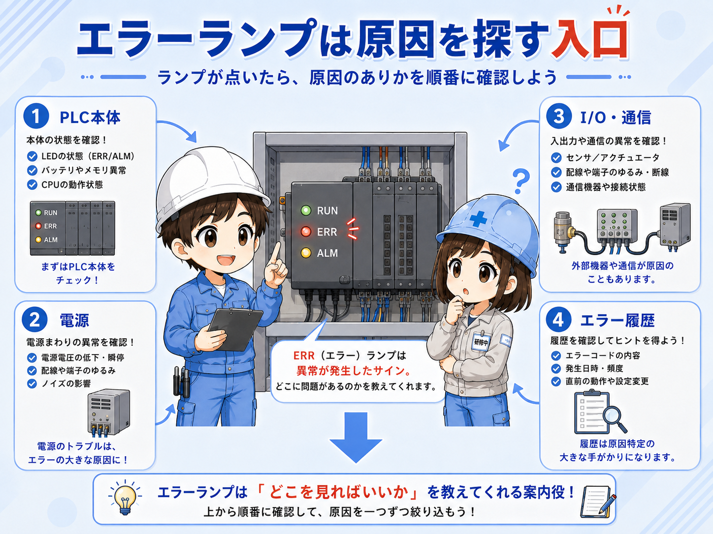
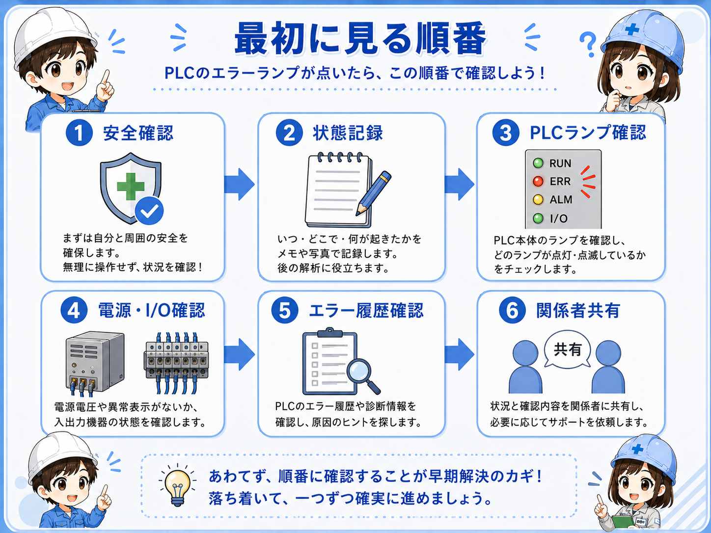
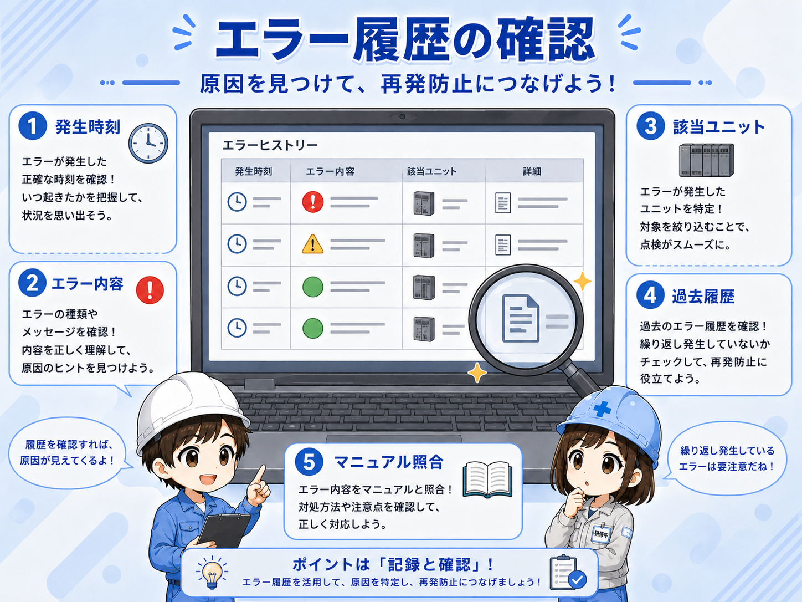
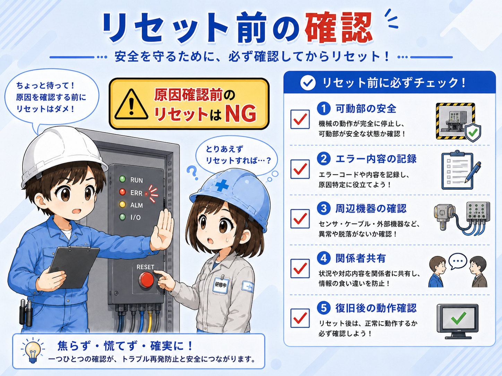

1. 先に結論：エラーランプは「止まった理由を探す入口」
PLCのエラーランプが点いた時は、PLCが何らかの異常や注意状態を知らせている可能性があります。ここで大切なのは、いきなりリセットしないことです。
まず設備の状態、人の安全、機械が動き出しても危なくないかを確認します。その上で、PLC本体のランプ状態、電源、I/Oユニット、通信、エラー履歴を順番に見ます。
この記事で扱う範囲
この記事では、PLC本体のERR/ALMなどが点いた時に、現場で最初に見る順番を整理します。機種ごとのランプ名やエラーコードの意味は異なるため、詳細判断は必ず使用中のPLCの公式マニュアル、GX Works3の診断情報、現場ルールに従ってください。

先輩エラーランプが点いた時ほど、まず落ち着いて状態を残す。リセットは最後の方だよ。

新人原因を見る前に消してしまうと、あとで何が起きたか分からなくなるんですね。
2. PLCのエラーランプとは何を知らせるものか
PLC本体やユニットのランプは、運転状態、異常、警報、通信状態、電源状態などを知らせるための表示です。RUN、ERR、ALM、BAT、SD/RDなど、名称や意味は機種によって違います。
ランプが点いた時は「PLCが壊れた」と決めつけるのではなく、電源、CPU、I/O、通信、プログラム、バッテリ、外部機器のどこに関係しているかを切り分ける入口として見ます。

| 見る場所 | 確認したいこと | 注意点 |
|---|---|---|
| PLC本体 | RUN/ERR/ALMなどの点灯・点滅 | ランプ名は機種で違うため、現物とマニュアルを合わせる |
| 電源 | 電源電圧、電源ユニット、24V系の状態 | 電圧低下や瞬停も疑う |
| I/O・通信 | ユニット異常、通信エラー、断線 | PLC本体以外の周辺要因も見る |
| エラー履歴 | いつ、どのエラーが出たか | リセット前に記録しておく |
3. 最初に見る順番
現場では、PLC画面やソフトを見る前に、設備の安全状態を先に確認します。エラーの内容によっては、復旧操作後に設備が動き出す可能性があるためです。

- 人と設備の安全を確認：可動部、挟まれ、落下、エア残圧、周囲作業者を確認します。
- 現象を残す：PLCランプ、タッチパネル表示、設備状態、時刻を記録します。
- PLC本体のランプを見る：どのランプが点灯・点滅しているか確認します。
- 電源とI/Oを見る：電源低下、ユニット異常、配線・通信異常の可能性を見ます。
- エラー履歴を見る：GX Works3などで診断情報や履歴を確認します。
- 復旧前に共有する：原因、復旧方法、再発時の対応を関係者と確認します。
4. 電源・I/O・通信も合わせて見る
PLCのエラーランプが点いていても、原因がPLC本体だけとは限りません。電源ユニット、24V電源、I/Oユニット、通信ユニット、外部機器、配線側の問題で異常になることもあります。
電源
AC電源、DC24V、電源ユニットのランプ、瞬停や電圧低下を確認します。
I/Oユニット
入力・出力ユニットの異常表示、端子台、外部配線、短絡を確認します。
通信
ネットワーク機器、ケーブル、通信ユニット、相手機器の状態を確認します。
外部機器
インバータ、サーボ、ロボシリンダー、タッチパネル側の異常も確認します。
PLCだけを見続けない
PLCは周辺機器の異常を受けて止まることもあります。ランプだけで判断せず、設備側の電源、通信、I/O、外部機器の表示を合わせて見ます。
5. GX Works3などでエラー履歴を確認する
PLC本体ランプを確認したら、可能であればGX Works3などの開発ソフトで診断情報やエラー履歴を確認します。ここで、発生時刻、エラー内容、該当ユニット、復旧条件の手がかりを見ます。

- 発生時刻と設備の動作タイミングを合わせる
- どのCPU・ユニット・通信に関係するエラーか確認する
- 過去にも同じエラーが出ていないか見る
- 復旧後に消える一時エラーか、継続している異常か分ける
- 画面の文言だけで断定せず、公式マニュアルと照合する
6. リセット・再起動の前に確認すること
リセットや電源再投入で一時的に復旧することはありますが、原因が残っていると再発します。また、復旧操作で設備が動き出す可能性もあります。

リセットは原因確認後に行う
エラー内容や設備状態を残さずにリセットすると、原因が分からなくなることがあります。復旧操作は、現場ルール、責任者判断、安全確認に従って行います。
- 可動部の安全を確認する
- エラー内容と時刻を記録する
- 周辺機器の異常表示も確認する
- 関係者へ状況を共有する
- 復旧後に動かす条件を決める
- 再発した場合の止め方を確認する
7. よくある注意点
エラーランプ点灯時は、焦って「とりあえずリセット」「とりあえず電源を入れ直す」となりがちです。しかし、それだけでは原因が残り、同じ停止を繰り返すことがあります。
記録が次の復旧を早くする
ランプ状態、表示文言、時刻、設備状態、直前の作業内容を残しておくと、再発時に原因を絞りやすくなります。
- ランプ名を思い込みで読まない
- PLC本体だけでなく周辺機器も見る
- リセット前に状態を記録する
- バッテリや通信など軽く見がちな表示も確認する
- 復旧後に手動・低速・単動で確認できるなら段階的に見る
8. まとめ
PLCのエラーランプが点いた時は、原因を消す前に、まず状態を確認して記録することが大切です。設備安全、ランプ状態、電源、I/O、通信、エラー履歴、復旧前確認の順番で見ると、慌てず対応しやすくなります。
- 最初に人と設備の安全を見る
- ランプ状態と表示内容を記録する
- 電源・I/O・通信・外部機器も見る
- GX Works3などでエラー履歴を確認する
- リセットは原因確認と安全確認の後に行う